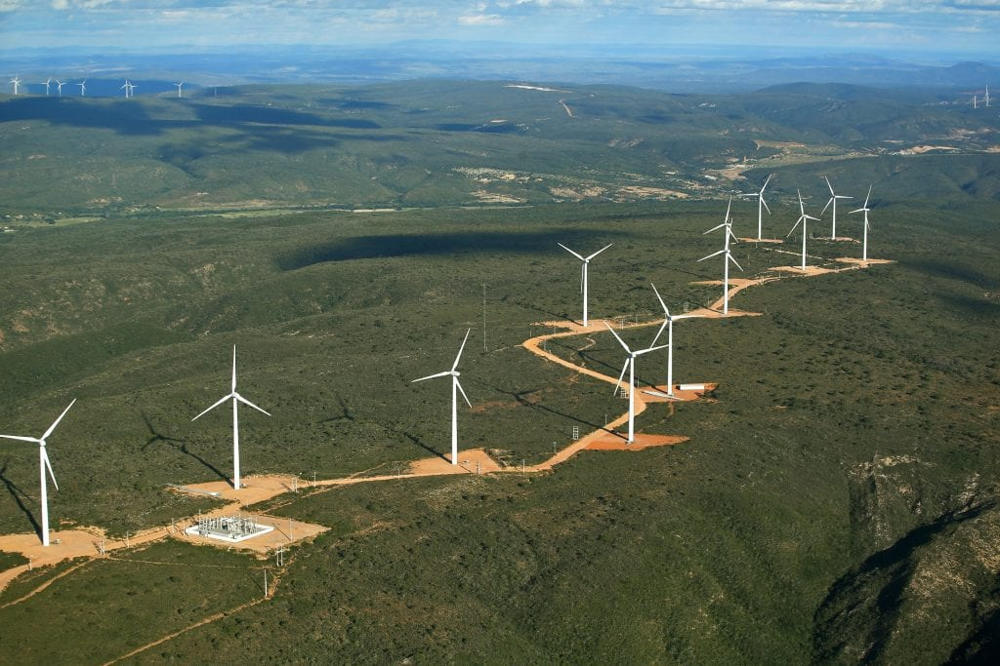
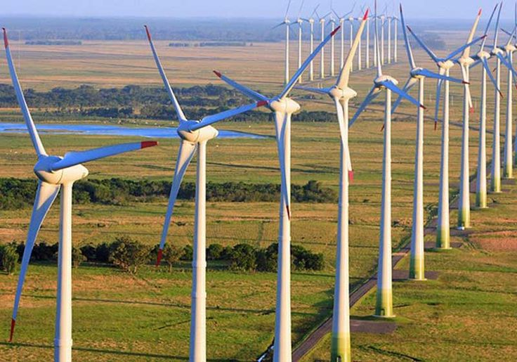
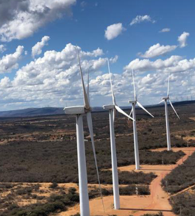
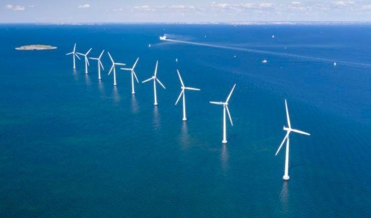

Energia Eólica

Parque Eólico de Guanambi, Bahia.
A energia eólica é uma fonte de energia renovável gerada a partir do vento. As turbinas eólicas convertem a energia cinética do vento em eletricidade, sem emitir poluentes e com baixo impacto ambiental. Esse tipo de energia é uma alternativa sustentável aos combustíveis fósseis, sendo cada vez mais utilizado em diversas partes do mundo. A energia eólica pode ser utilizada tanto em grande escala, em parques eólicos, quanto em pequena escala, para atender a necessidades locais ou residenciais. Além disso, ela contribui para a diversificação da matriz energética e para a redução das emissões de gases de efeito estufa.
A energia eólica funciona através do aproveitamento do vento para gerar eletricidade. As turbinas eólicas, com suas lâminas, capturam a força do vento, fazendo-as girar. Esse movimento é transformado em energia mecânica, que é convertida em eletricidade por um gerador. Assim, a energia do vento é convertida em energia elétrica, sem a emissão de gases poluentes.

Usinas eólicas no RS.
Vantagens e Desvantagens
Sua principal vantagem é o fato de ser produzida por meio de uma fonte limpa e renovável. Com baixo impacto ambiental, especialmente em relação à poluição do ar e da água, a energia eólica é uma ótima alternativa para países que enfrentam dificuldades com outras fontes de energia, como hidrelétricas ou termelétricas.
Por outro lado, a principal desvantagem está nos altos custos de construção e instalação das turbinas eólicas. As turbinas e suas hélices são os componentes mais caros devido aos materiais resistentes necessários. Além disso, é necessário um grande espaço para instalar os parques eólicos, e as condições de vento precisam ser favoráveis, o que limita a viabilidade em algumas regiões. Embora tenha um impacto ambiental reduzido, há o risco de aves e outros animais se chocarem com as lâminas das turbinas.
A Energia Eólica no Brasil e no Mundo
Apesar dos desafios e limitações, o futuro da energia eólica é promissor. Com o avanço da tecnologia e a crescente demanda por fontes de energia limpas e renováveis, ela vem ganhando cada vez mais destaque no setor energético global. Muitos países, incluindo o Brasil, estão investindo em projetos de energia eólica, acreditando que essa fonte pode ser uma alternativa eficaz para reduzir a dependência de combustíveis fósseis e combater as mudanças climáticas.
No Brasil, a energia eólica tem crescido principalmente no Nordeste, onde os ventos fortes são ideais para a geração de eletricidade. Estados como Ceará, Bahia e Rio Grande do Norte lideram a produção, tornando o Brasil um dos maiores produtores de energia eólica da América Latina. Esse investimento tem ajudado a diversificar a matriz energética do país, reduzindo a dependência de fontes fósseis e contribuindo para a sustentabilidade.
Muitos países já estão investindo em projetos como na coreia do sul em Seul, onde esta sendo planejado um parque eólico subaquático, com turbinas instaladas no fundo do mar para gerar energia limpa. O projeto visa aproveitar ventos e correntes marinhas, sendo uma alternativa eficiente e de baixo impacto visual, contribuindo para a redução das emissões de carbono.
Exemplos de parques Eólicos.

Parque Eólico de Guanambi, Bahia..
Guanambi, na Bahia.
O Parque Eólico de Guanambi, na Bahia, é um importante projeto de energia renovável no Brasil. Aproveitando o forte potencial de ventos da região, o parque contribui para a geração de eletricidade limpa e sustentável, além de impulsionar a economia local e criar empregos.
Seul, Coreia do Sul.
Seul, na Coreia do Sul, está investindo em energia eólica offshore, com o objetivo de instalar turbinas no mar ao largo da sua costa. Esse projeto faz parte da estratégia do país para aumentar a geração de energia renovável e reduzir as emissões de carbono. Além de contribuir para a sustentabilidade, a iniciativa também visa impulsionar a economia local e posicionar a Coreia do Sul como líder em energias limpas.

Projeto offshore em Seul, Coreia do Sul.